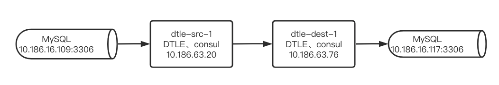
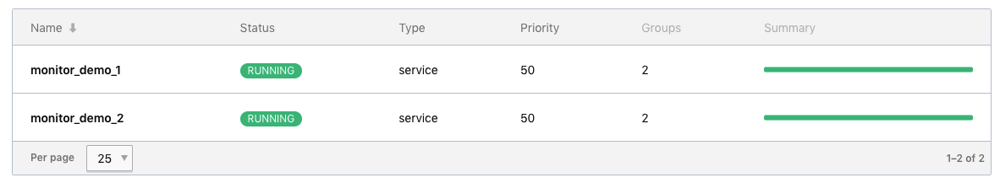
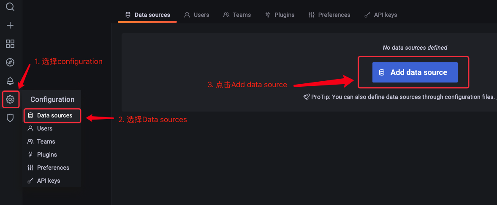
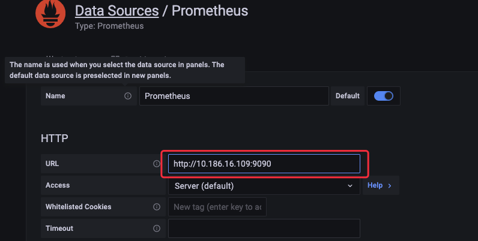
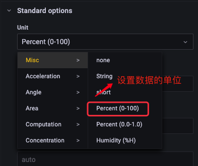

如何搭建DTLE的监控系统
背景：
虽然在DTLE的文档里提供各种监控项的介绍，但是对于不熟悉prometheus和grafana配置的同学来说上手还是有些难度的。今天我就来DTLE 3.21.07.0来搭建一个DTLE的监控系统。
一、搭建DTLE运行环境
- 配置两个节点的DTLE集群来演示,其拓扑如下:

在修改DTLE配置文件的时候需要注意以下两点：
- 开启DTLE的监控，确保publish_metrics的值为ture
- 开启nomad的监控，确保正确配置telemetry
这里以dtle-src-1的配置为例，具体配置参考节点配置:
# DTLE 3.21.07.0中nomad升级为1.1.2，需要添加如下配置使nomad提供监控数据
# 之前版本的DTLE无需添加此配置
telemetry {
prometheus_metrics = true
collection_interval = "15s"
}
plugin "dtle" {
config {
data_dir = "/opt/dtle/var/lib/nomad"
nats_bind = "10.186.63.20:8193"
nats_advertise = "10.186.63.20:8193"
# Repeat the consul address above.
consul = "10.186.63.76:8500"
# By default, API compatibility layer is disabled.
api_addr = "10.186.63.20:8190" # for compatibility API
nomad_addr = "10.186.63.20:4646" # compatibility API need to access a nomad server
publish_metrics = true
stats_collection_interval = 15
}
}
添加两个job模拟两个MySQL实例之间传输数据

二、部署prometheus
- 准备prometheus配置文件同时接收nomad和DTLE的metrics
- DTLE监控labels:instance的值建议设置为DTLE服务器的hostname
shell> cat /path/to/prometheus.yml
global:
scrape_interval: 15s # Set the scrape interval to every 15 seconds. Default is every 1 minute.
evaluation_interval: 15s # Evaluate rules every 15 seconds. The default is every 1 minute.
scrape_configs:
- job_name: 'nomad'
scrape_interval: 15s
metrics_path: '/v1/metrics'
params:
format: ['prometheus']
static_configs:
- targets: ['10.186.63.20:4646']
labels:
instance: nomad-src-1
- targets: ['10.186.63.76:4646']
labels:
instance: nomad-dest-1
- job_name: 'dtle'
scrape_interval: 15s
metrics_path: '/metrics'
static_configs:
- targets: ['10.186.63.20:8190']
labels:
instance: dtle-src-1
- targets: ['10.186.63.76:8190']
labels:
instance: dtle-dest-1
利用docker部署prometheus服务
shell> docker run -itd -p 9090:9090 --name=prometheus --hostname=prometheus --restart=always -v /path/to/prometheus.yml:/etc/prometheus/prometheus.yml prom/prometheus在浏览器上访问prometheus的页面 http://${prometheus_server_ip}:9090/targets 验证配置生效

三、部署grafana
利用docker部署grafana服务
shell> docker run -d --name=grafana -p 3000:3000 grafana/grafana在浏览器上访问grafana的页面 http://${grafana_server_ip}:3000 ，使用默认用户 admin/admin登录
配置添加数据源

选择添加promethues

只需将promethues的访问地址添加到URL中，点击“sava & test”按钮

添加panel

以添加一个CPU使用率监控为例配置一个panel


四、常用的监控项
nomad所有监控项： https://www.nomadproject.io/docs/operations/metrics
DTLE所有监控项：https://actiontech.github.io/dtle-docs-cn/3/3.4_metrics.html
| 说明 | 公式示例 | 单位 |
|---|---|---|
| CPU使用率(总计) | sum(rate(process_cpu_seconds_total{instance=~"nomad-src-1 | dtle-src-1"}[60s])) * 100 |
Misc / Percent(0-100) |
| CPU使用率(DTLE ) | rate(process_cpu_seconds_total{instance="dtle-src-1"}[60s]) * 100 |
Misc / Percent(0-100) |
| CPU使用率(nomad) | rate(process_cpu_seconds_total{instance="dtle-src-1"}[60s]) * 100 |
Misc /Percent(0-100) |
| 内存使用(总计) | sum(process_resident_memory_bytes{instance=~"nomad-src-1 | dtle-src-1"}) /1024 /1024 |
Data / mebibyte |
| 内存使用(DTLE ) | process_resident_memory_bytes{instance="dtle-src-1"} /1024 /1024 |
Data / mebibyte |
| 内存使用(nomad) | process_resident_memory_bytes{instance="nomad-src-1"} /1024 /1024 |
Data / mebibyte |
| 带宽(总计 - 源端发送) | sum(increase(dtle_network_out_bytes{host="dtle-src-1"}[30s]) /30 /1024) * 8 |
Data rate / kibibits/sec |
| 带宽(按task分组 - 源端发送) | increase(dtle_network_out_bytes{host="dtle-src-1"}[30s]) /30 /1024 * 8 |
Data rate / kibibits/sec |
| 带宽(总计 - 目标端接收) | sum(increase(dtle_network_in_bytes{host="dtle-dest-1"}[30s]) /30 /1024) * 8 |
Data rate / kibibits/sec |
| 带宽(按task分组 - 目标端接收) | increase(dtle_network_in_bytes{host="dtle-dest-1"}[30s]) /30 /1024 * 8 |
Data rate / kibibits/sec |
| 数据延迟(源端) | dtle_delay_time{host="dtle-src-1"} |
Time / seconds(s) |
| 数据延迟(目标端) | dtle_delay_time{host="dtle-dest-1"} |
Time / seconds(s) |
| TPS(源端) | irate(dtle_src_extracted_incr_tx_count[30s]) |
Misc / none |
| TPS(目标端) | irate(dtle_dest_applied_incr_tx_count[30s]) |
Misc / none |
| QPS(源端) | irate(dtle_src_extracted_incr_query_count[30s]) |
Misc / none |
| QPS(目标端) | irate(dtle_dest_applied_incr_query_count[30s]) |
Misc / none |
| Buffer(源端) | dtle_buffer_src_queue_size |
Misc / none |
| Buffer(目标端) | dtle_buffer_dest_queue_size |
Misc / none |
五、最后创建多个panel同时展示